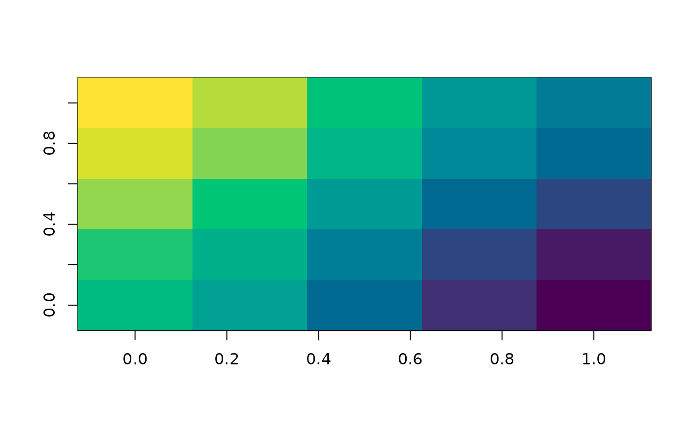
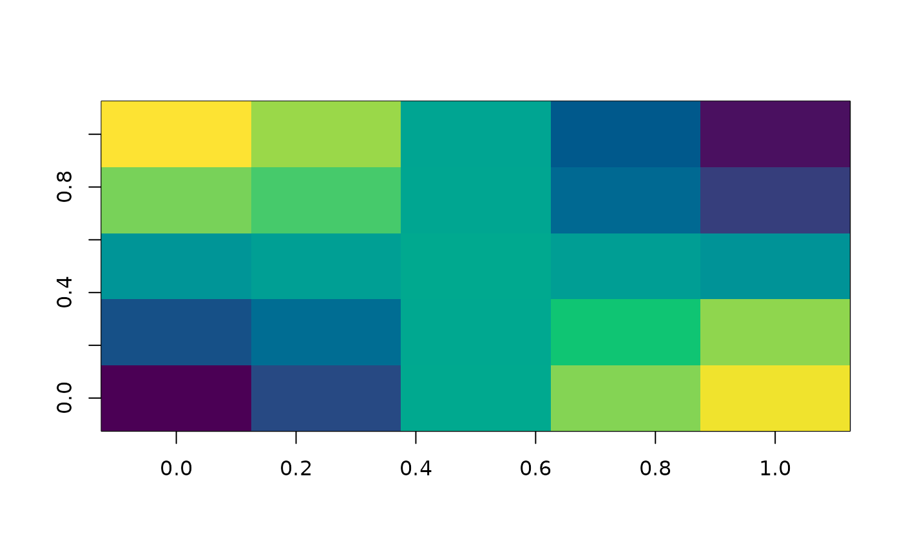
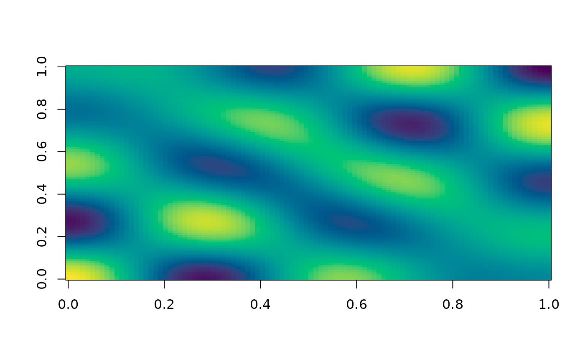

Generates features as the low-magnitude eigenvectors of a graph Laplacian, which can be thought of as a generalization of the Fourier basis to graph-structured data.
Arguments
- x
An integer-indexed adjacency list, igraph::igraph, or adj::adj object.
- p
The number of features to generate.
- symmetric
Whether
xis assumed symmetric.
Examples
if (requireNamespace("adj", quietly = TRUE) && requireNamespace("RSpectra", quietly = TRUE)) {
pal = hcl.colors(256)
a = adj::adj(
c(6, 2), c(1, 7, 3), c(2, 8, 4), c(3, 9, 5), c(4, 10), c(1, 11, 7), c(6, 12, 2, 8),
c(7, 13, 3, 9), c(8, 14, 4, 10), c(9, 5, 15), c(6, 12, 16), c(11, 7, 13, 17),
c(12, 8, 18, 14), c(13, 9, 19, 15), c(14, 20, 10), c(11, 21, 17), c(12, 16, 22, 18),
c(13, 17, 23, 19), c(18, 24, 14, 20), c(19, 15, 25), c(16, 22), c(21, 17, 23),
c(22, 18, 24), c(23, 19, 25), c(24, 20)
)
m = b_gff(a, p = 3, symmetric = TRUE)
image(matrix(m[, 1], 5, 5), col = pal)
image(matrix(m[, 3], 5, 5), col = pal)
if (requireNamespace("igraph", quietly = TRUE)) {
a = igraph::make_lattice(c(100, 100))
xy = igraph::layout_on_grid(a)
m = b_gff(a, p = 25, symmetric = TRUE)
eig_25 = m[, 25] # 25th Fourier feature
image(matrix(eig_25, 100, 100), col=pal)
}
}


